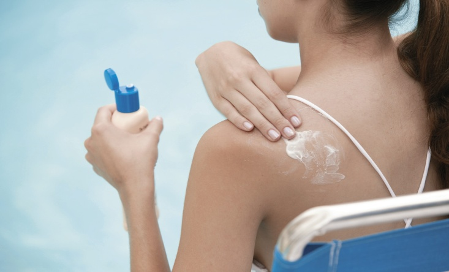

SUNBURN TREATMENT
CALL EMERGENCY # if:
- Does not seem to be responding appropriately
- Has a seizure, visual changes, or any other neurologic symptoms; these could be symptoms of severe heat illness.
1. Call a health care provider if:
- The burn has blisters or the skin is white-appearing or numb. These are symptoms of a more-serious sunburn.
- The sunburned person is a child under one year old.
2. Rehydrate
- Replace body fluids with water, juice, or sports drinks.
3. Treat Symptoms
- Apply aloe or over-the-counter moisturizing lotion to skin as directed.
- 
- To soothe and cool skin, bathe in lukewarm water or apply cool compresses to the area.
- For pain, take ibuprofen (Advil, Motrin) or acetaminophen (Tylenol).